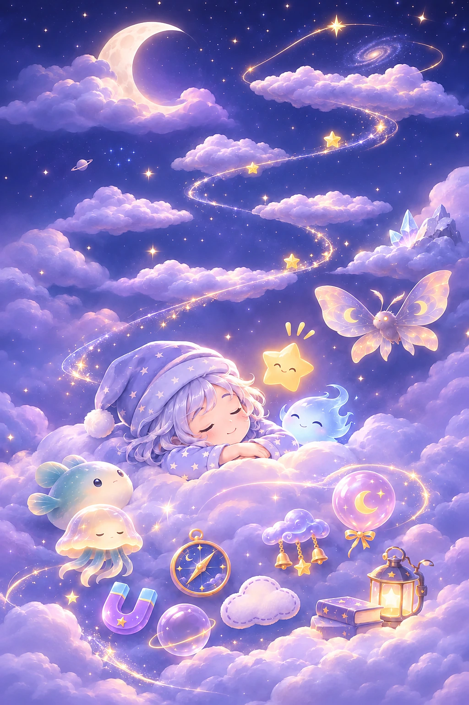
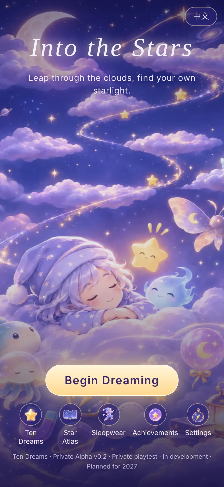
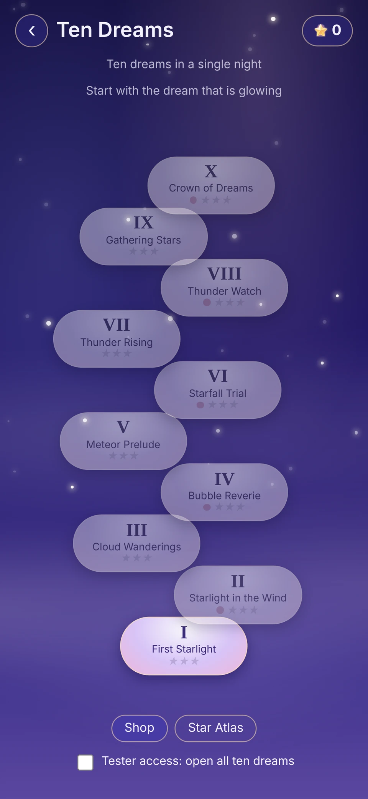
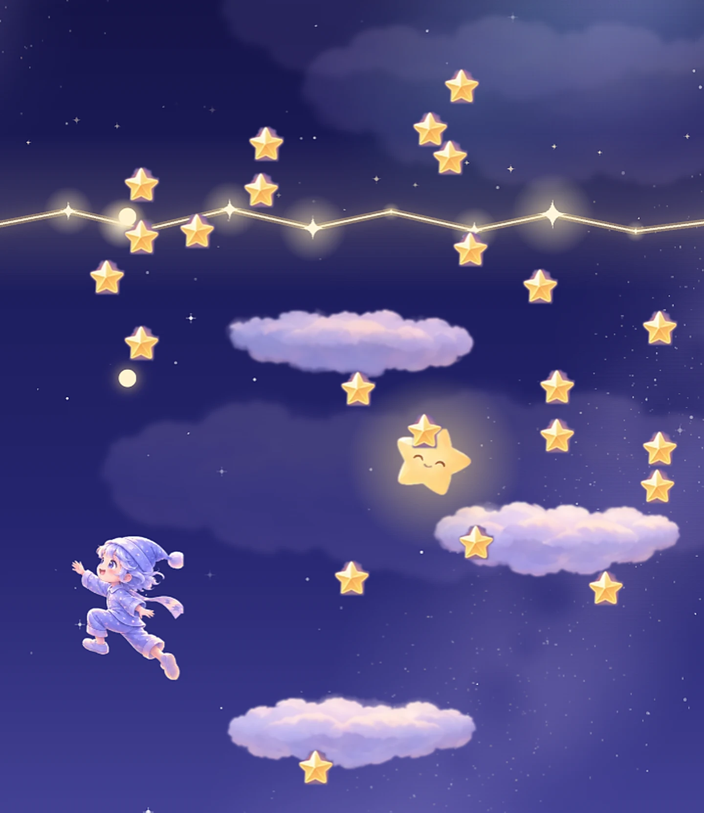
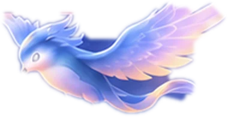
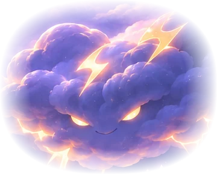
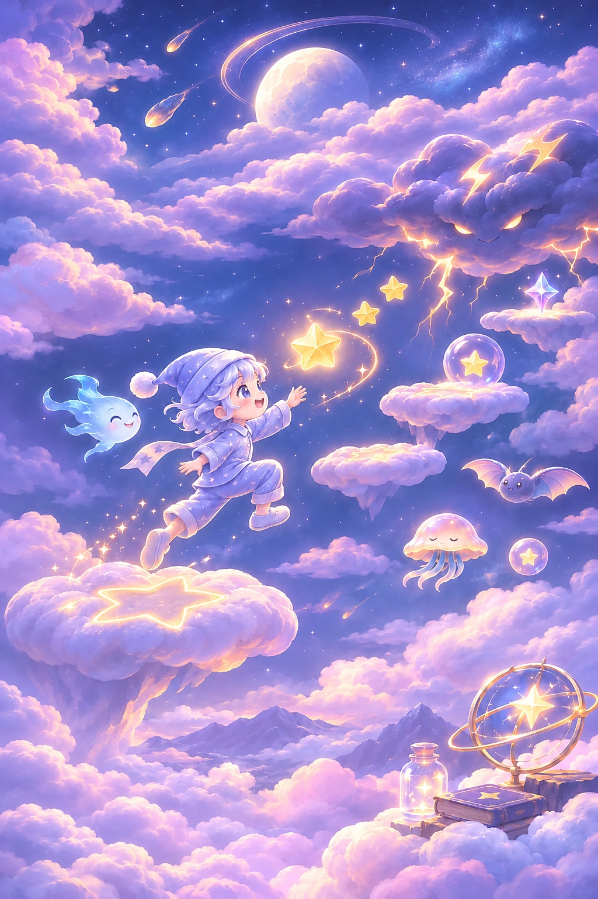

Into the Stars
Leap through the clouds, find your own starlight.
A small game about the few minutes before sleep. A dreamer in pajamas climbs from cloud to cloud through ten dreams in a single night.

As night falls, an endless sky unfolds within your dreams.
Follow your guiding star, leap across soft clouds,
and journey through unfamiliar skies to discover scattered starlight.
The game's opening lines
Sleep as something you play
Most sleep products treat sleep as a problem to fix. I wanted to try the opposite: what if sleep itself could be the content, something to play with and enjoy rather than a task to complete? Into the Stars is my attempt to turn sleep into an entertainment IP.



Dream tools
Collectibles
Creatures
Guardians


Ten Dreams
From the moment your eyes close to the last dream before dawn. In five of them, a guardian is waiting.
Ten Dreams is a private alpha, a first chapter for tuning how the game feels. The full game comes next.
- IFirst Starlight
- IIStarlight in the WindSkywing Captain
- IIICloud Wanderings
- IVBubble ReverieBubble Queen
- VMeteor Prelude
- VIStarfall TrialMeteor Beast
- VIIThunder Rising
- VIIIThunder WatchThunder Sentinel
- IXGathering Stars
- XCrown of DreamsStormheart
Star Atlas
The atlas belongs to the dreamer, shared by Ten Dreams and Deep Dream alike. Ten Dreams already holds the twelve signs, plus twelve hidden zodiac cards.
Which one is yours?
- Aries
- Taurus
- Gemini
- Cancer
- Leo
- Virgo
- Libra
- Scorpius
- Sagittarius
- Capricornus
- Aquarius
- Pisces
Coming next
Deep Dream
A full action roguelike world. Every night takes a different path, and the deeper you go, the wider the sky becomes.
- Level up and evolveYour dreamer and their starlight grow stronger and take new forms.
- Build your runCombine tools and powers into a build that is yours alone.
- LeaderboardsSee how far you climbed next to other dreamers.
- All 88 constellationsBeyond the twelve signs, the whole night sky is waiting to be lit.

How it is made
I am independently designing Into the Stars, and all of its core gameplay mechanics are my own. I first built it in Godot 4.7.2, with AI-assisted coding throughout, and for the past three months I have worked on its engineering almost every day.
When AI couldn't fix a bug in the HUD's architecture, I restructured it myself, placing the three top-screen elements at the same level of the scene tree.
The current Ten Dreams private alpha is implemented in HTML and JavaScript for browser-based playtesting.
The process thrilled me, and it showed me how much technical depth I still need to bring more complex ideas to life.